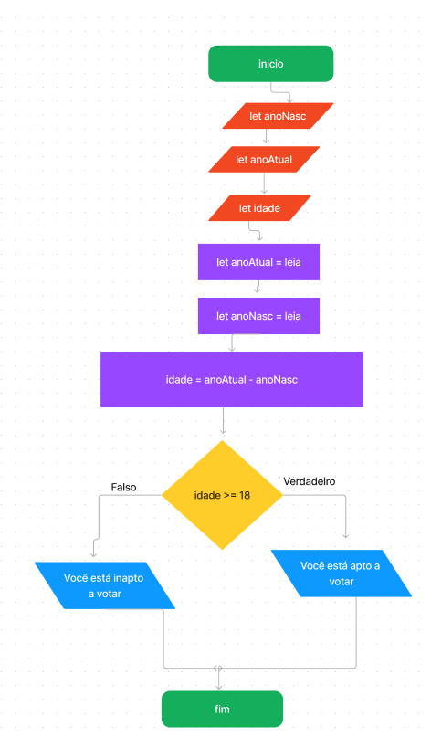

    
    <script>
        // Algoritmo vai verificar se a pessoa está apta ou não a votar
        // para votar é necessario ser maior de 18 anos
    
        // declaração de variaveis 
        let anoNasc;
        let anoAtual;
        let idade;
    
        // Entrada de dados e atribuição de valores as variaveis
        anoAtual = Number(prompt('Digite o ano atual: '));
        anoNasc = Number(prompt('Digite o ano de nascimento: '));
        idade = anoAtual - anoNasc;
    
        // Estrutura condicional IF e ELSE
        document.write(`A sua idade é ${idade} anos <br>`); // Saida de dados 
        if (idade >= 18){
            document.write('Você está apto a votar'); // Saida de dados caso verdadeiro
        }else{
            document.write('Você não está apto a votar'); // Saida de dados caso falso
        };
    
    </script>
